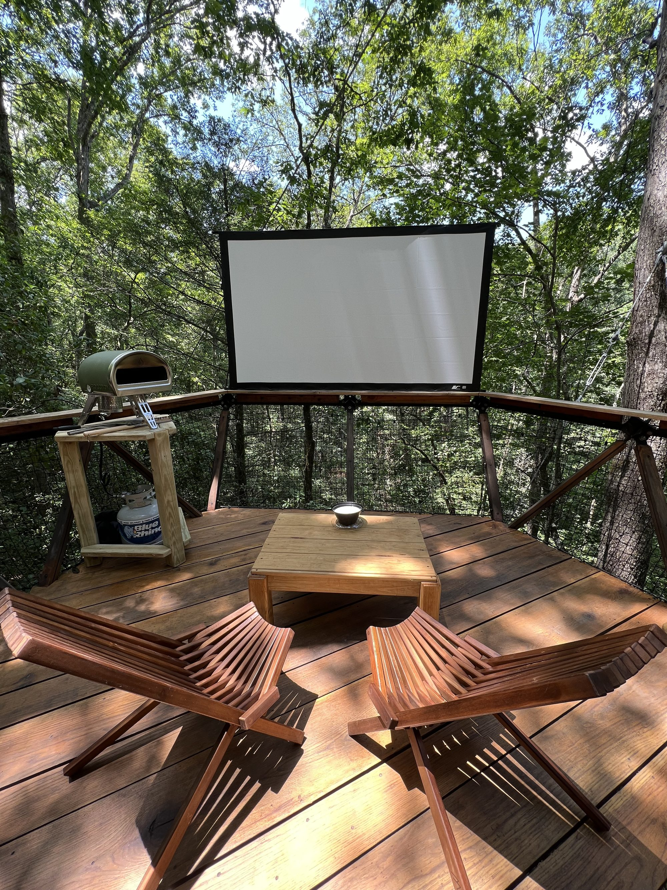

Local Guide
Your Guide to Dahlonega &
the North Georgia Mountains
The spots we actually send our guests to. Not everything in town — just the places worth your time.

Wine Country
15 Wineries. 20 Minutes. Start Here.
Dahlonega sits at the heart of Georgia's wine country. These are the three we send every guest to — and three more for the ones who want to keep going.
Wolf Mountain Vineyards (~15 min)
The crown jewel. Award-winning wines, hilltop views, and a Sunday brunch that books up fast. If you can only do one winery, this is it.
Mick's pick: Call ahead for brunch. It fills up.
Montaluce Winery & Restaurant (~20 min)
Best food in wine country. Floor-to-ceiling windows overlooking the vineyard. Great for a long lunch with wine.
Mick's pick: The restaurant is the real draw.
Kaya Vineyard & Winery (~12 min)
270-degree mountain views from a hilltop. The most dramatic vista of any winery in the area. Get there an hour before sunset with a glass in hand.
Mick's pick: The best free sunset show in North Georgia.
Doghobble Wine Farm (~5 min)
A working farm with wine. Dogs, chickens, alpacas. The most authentic, unpretentious winery in the area. Great food too.
Mick's pick: For guests who want real, not polished.
Cavender Creek Vineyards (~5 min)
Family-owned, laid-back, estate-grown wines. Right around the corner from Doghobble.
Mick's pick: Pair with Doghobble for a chill afternoon close to the property.

Hiking & Waterfalls
Waterfalls, Summits, and the Appalachian Trail
Some of the most dramatic hiking in the Southeast — all within 45 minutes. From easy waterfall walks to above-the-clouds sunrise hikes.
Amicalola Falls (~45 min)
Tallest cascading waterfall in Georgia. 729 feet. Multiple viewing platforms. The East Ridge Loop gives you the best experience.
Mick's pick: THE waterfall recommendation. Hit B.J. Reece Orchards on the way back for cider and doughnuts.
Preacher's Rock from Woody Gap (~25 min)
Short climb, massive reward. One of the best views in North Georgia. 2 miles round trip on the Appalachian Trail. Faces southeast — above the clouds at sunrise.
Mick's pick: Leave the treehouse by 6:30 AM. Best effort-to-reward ratio in the area.
Raven Cliff Falls (~35 min)
4.9 miles round trip to a stunning waterfall. Stream crossings, beautiful forest, real hiking.
Mick's pick: For guests who actually want to hike. Stop in Helen after for the mountain coaster.
Lake Zwerner (~7 min)
Easy, scenic loop around the reservoir. Flat, beautiful, accessible. Seven minutes from the treehouse.
Mick's pick: Coffee at Jethro's first, then the loop. The perfect easy morning.

Downtown Dahlonega
Gold Rush History & Small-Town Character
America's first gold rush started here in 1828. The town square still has the gold-leaf steeple courthouse, surrounded by local shops, restaurants, and places that have nothing to do with a chain.
Spirits Tavern
Elevated American fare on the square. Good cocktails, solid menu. The default dinner recommendation.
Mick's pick: Call ahead on weekends.
Picnic Cafe
The mayor's wife bakes. Small-town, personal, genuine. Great sandwiches and baked goods.
Mick's pick: Perfect quick lunch before exploring the square.
Foothill Grill (~10 min)
Breakfast legend. The cinnamon rolls are the thing people talk about.
Mick's pick: The cinnamon rolls. Get there early on weekends.
Consolidated Gold Mine (~8 min)
200 feet underground, constant 60 degrees, 40-minute guided tour through original tunnels. Gold panning included. The perfect rainy day anchor.
Mick's pick: The number one rainy day recommendation. Underground means weather-proof.
Jethro's Coffee House
The coffee stop. Period. Good coffee, cozy vibe, right on the square.
Mick's pick: Coffee at Jethro's before a hike to Lake Zwerner. That's the move.
Dahlonega Fudge Factory
Family-owned since 1982. 15+ fudge varieties. The Dahlonega Nuggets — pecans in caramel dipped in chocolate. An institution.
Mick's pick: Everyone stops here. It's part of the experience.
Paul Thomas Chocolates
120+ handmade recipes made on-site. The elevated chocolate option.
Mick's pick: Good for couples looking for something special to bring back to the treehouse.

Day Trips
Three Mountain Towns Within an Hour
When you want to explore beyond Dahlonega, these three towns extend the adventure.
Helen, GA (~35 min)
Bavarian village in the mountains. The real draw is the Alpine Coaster — gravity-powered, you control the speed — and $5 unlimited river tubing in summer.
Mick's pick: Do the coaster, walk the village, get ice cream. Full afternoon.
Ellijay, GA (~45 min)
Georgia's apple capital. In fall, B.J. Reece Orchards for apple picking and legendary doughnuts, then walk across to Reece's Cider Company for 16 hard ciders on tap.
Mick's pick: In fall, this is THE day trip.
Blue Ridge, GA (~1 hr)
Vintage scenic railway along the Toccoa River. Zip lines and aerial courses at the Adventure Park. More polished downtown with shops and galleries.
Mick's pick: Book the railway ahead — it sells out.
Every Season Has a Story
Seasonal Highlights
Spring
Wildflowers blanket the forest floor. Mountain laurel blooms along every trail. The Dahlonega Butterfly Farm opens late March. The waterfalls run full and the forest smells like rain and new growth.

Summer
Fireflies in the forest at dusk — June and July, the canopy lights up from the inside. $5 unlimited tubing in Helen. Long evenings on the deck. The canopy is so thick the only light is green.
Fall
Color at elevation arrives earlier and lasts longer. The canopy turns gold, then crimson, then amber. Apple picking in Ellijay. Gold Rush Days on the square. The most dramatic season — and the most popular. Book early.

Winter
Frost on the rope bridge. Bare canopy reveals views the leaves keep secret. The fire pit feels essential. Old Fashioned Christmas transforms Dahlonega into the Christmas Town of the Southeast. The silence is deeper. The stars are brighter. The forest is yours.
Quick Reference
If You Only Have Time For...
One winery?
Wolf Mountain. Call ahead for brunch.
Two wineries?
Wolf Mountain + Montaluce. Best food in wine country.
Chill afternoon?
Doghobble + Cavender Creek. Both 5 minutes from the treehouse.
Best hike?
Amicalola Falls. Hit B.J. Reece Orchards on the way back.
Quick hike, big views?
Preacher's Rock from Woody Gap. 2 miles. Above the clouds.
Rainy day?
Consolidated Gold Mine + downtown square. Fudge, coffee, wine tasting.
Nice dinner?
Spirits Tavern. Call ahead on weekends.
Best breakfast?
Foothill Grill. The cinnamon rolls.
Evening in?
Pizza on the sky deck. Or beer board + projector movie.
Secret sunrise?
Preacher's Rock. Leave the treehouse by 6:30 AM.
Secret sunset?
Kaya Vineyard. An hour before sunset. Wine in hand.